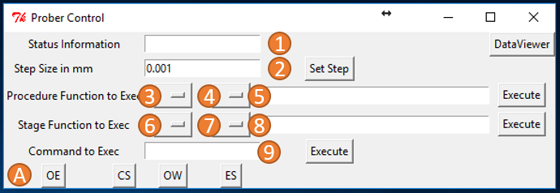

Graphical User Interface¶
{kind=link}
Active Stage:¶
The buttons in line A are used to choose the active stage. All buttons callSetActiveStage(Stage)with their representative key and change theself.ActiveStagevariable. The active stage can be controlled using the cursor buttons, seeleftKey(),rightKey(),forwardKey(),backwardKey(),upKey(),downKey(). The function bindings are the being done in the constructor. Be aware thatup()/downKey()are bound to pressingshift+forwardorshift+backward. All functions call thestep()function of the currently active stage.
Step Size:¶
Line 2 of the GUI lets the user enter a the step size the active stage is supposed to do when the cursor buttons are pressed. The button in line 2 callsStepSetButton()that reads the value in entry field and calls theset_stepsize()function of the active function
Status Information:¶
Line 1 in the GUI shows an entry field which is used to display the last move of the currently active Stage.
Calling Procedures:¶
All functions in procedures that are imported by the Maitre can be executed with the third line of the GUI. Line 3 is a OptionMenu called ModBox that is filled with all modules listed in the Maitre. When a choice in the ModBox is made (see
ModBoxChange()) theOptionmenu FuncBox(item 4) is updated with all functions within this module. A selection of a function callsFuncBoxChange(). This function calls theget_func_parameters()function from theMaitrefor the selected function before displaying the return in the entry field (Item 5), it filters out any entries about Stages or Maitre. Those will be handled in the background. Showing the parameters in the entry field is a reminder for the user to enter the right parameters for calling the chosen function.
- The button on line 3 is called
ProcButton. Hitting it calls theProcButton()function. This function reads the user-altered parameter string, by splitting the string in an array by splitting it at every space(‘ ’). !THIS SHOULD BE IMPROVED!. Afterwards every item in the array is analyzed ant then attached to the ArgList. Checks are:
- If the string is a number it is casted into a float
- If the string is
Stagesits replaced by theself.Stagesvariable- If the string is
Maitreits replaced by theself.Maitrevariable- If the string starts with ‘[‘ its considered a list. The string is split at ‘,’ and the new elements are casted into floats. The resulting list is attached to the
ArgListAfter this analyses
self.Maitre.get_func_paramsis called again to locate whether Maitre and Stages need to be passed to the called function. If so they are introduced at the right position in the ArgList. Finally,self.Maitre.execute_func()is called to execute the chosen function.
Calling Stages Functions:¶
- In line 4 all items in the
Stages Dictionaryare available in the optionmenu StageModBox (item 6). If a Stages entry is selectedStageClassChange()lists all functions of the selected classes, but filters all functions starting with a ’_’. Two lists are generated:
self.ActiveStageFuncList: holding the handles to execute the functionself.ActiveStageFuncNames: representing the names of the functions.The optionmenu named StageFuncBox is then updated with the ActiveStageFuncNames list.
- A choice here calls
StageFuncChange()which reads all parameters of the selected function (inspect.getargspec), while filtering out prompts for Stages,Maitreorself.This parameter list is then displayed in the entry fieldStageCommandEntry. The corresponding button is calledStageProcButton. Pressing it calls StageClassButton(). This function reads the user-altered parameter string, by splitting the string in an array by splitting it at every space (‘ ’). !THIS SHOULD BE IMPROVED, as two consecutive spaces lead to error!. Afterwards every item in the array is analyzed ant then attached to the ArgList. Checks are:
- If the string is a number it is casted into a float
- If the string is
Stagesits replaced by theself.Stagesvariable- If the string is
Maitreits replaced by theself.Maitrevariable- If the string starts with ‘[‘ its considered a list. The string is split at ‘,’ and the new elements are casted into floats. The resulting list is attached to the ArgList
After this analyses
get_func_paramsis called again to locate whetherMaitreandStagesneed to be passed to the called function. If so they are introduced at the right position in the ArgList. Finally,self.ActiveStageFuncList[self.ActiveStageFunc](*ArgList)is executed.
Directly Executing Code From the GUI:¶
The entry field item 9 offers the possibility to execute code as if the GUI would execute this code. Hitting the execute button next to it called CommandButton calls the functionCommandButton(). Which directly executes the string in the entry field. This allows most importantly to callself.Maitre.refresh(), which will re import the procedures folder and helps debugging those functions at a living setup.
Running Scripts:¶
To run measurement scripts choose use your script using theBrowse ScriptsButton in Line B. The current scipt name is shown in the text bocks. The script can be executed using theExecute ScriptButton.
Opening the Dataviewer:¶
Line 1 also holds the buttonDataViewerto start a new window that shows theDataViewerexplained in detail later.
Refreshing in the Stages Dictionary:¶
Line 1 also holds the buttonRefreshto restart the initialization process of connected equipment. Using the button tools that have not been added to the stages dictionary at start up can be added later.